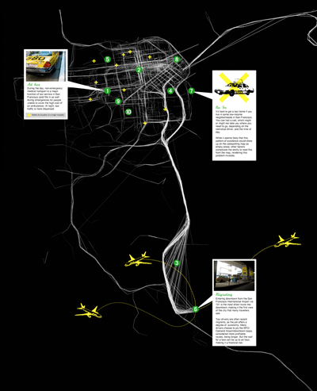
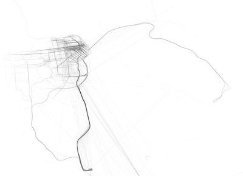

Invisible Dynamics
Common Systems of the Bay Area/Pacific Rim From the Exploratorium  Invisible Dynamics, a new Exploratorium project, examines the contemporary world as a series of expanding information systems, engaging artists and scientists to explore the world at a detail and at scales never accomplished before. The focus is far beyond the walls of the Exploratorium museum in San Francisco, harnessing the web and cutting edge tracking and imaging technology, to uncover, map, research and investigate the urban and natural systems and behaviors that give the San Francisco Bay Area its special character. The purpose of the work of each artist/scientist team is to reveal and layer systems – the constant and ephemeral, the unseen and idiosyncratic multi-phenomena – which are often hidden, but otherwise interlaced in our experience of the places where we live and work. Invisible Dynamics is also building a global view by comparing the ways in which the SF Bay region is a microcosm of the Pacific Rim.
The project links the domains of art, design, cultural geography, cartography, information design, sociology, archaeology, hydrology, ecology, marine sciences, and history. Among the four featured projects are: Cabspotting (www.cabspotting.com), an online system to track and record the movements of Yellow Cabs throughout the Bay Area. Designed by artist Scott Snibbe and programmed by Stamen Design, Cabspotting has two components: Cab Path Tracker and Cab Projects. Cab Path Tracker reveals the current and historical paths of cab rides around the bay and the underlying organic nature of their use patterns. The international airports, SFO and Oakland, and downtown San Francisco, emerge as the three strongest topological features. Cab Projects is a platform for other artists to creatively explore the recorded data from a cultural, political and social perspective. For example, artist Amy Balkin's In Transit, is an attempt to make social sense of patterns that emerge visually from the data, culled from taxi rides, conversations, statistics and other sources. Move Here utilizes the open resources of the web to build a database of historic and contemporary film clips originally designed as strategies for luring people to the West Coast and the Bay Area. Multi-disciplinary artist Ricardo Rivera assembled an eclectic array of clips promoting the people, weather and landscape as well as the promise of work, wealth, status and clean living afforded by the region. Designed as a databank of desire and opportunity, each film is projected anamorphically (or obliquely) onto a surface, requiring viewers to shift their physical position in order to receive the full impact of its message – to resolve the moving images, viewers must find to the right viewing angle. Move Here alludes to the perception of social space and status by requiring viewers to "change position" in order to understand the desires of others.  Other projects include Hidden Ecologies (http://arch.ced.berkeley.edu/kap2/php/hidden_ecologies) a field experiment of architect Chris Benton; microbiologist Wayne Lanier; and independent curator Marina McDougall, that fuses aerial kite photography with on site microcinematography, to map the invisible composition of micro-communities and forgotten cultural histories of three transitional salt marshes. Trace by Ali Sant (www.tracemap.net) utilizes a program her team designed for a PDA enabling users to investigate dynamic state changes in the city's WiFi network zone while it is evolving. The project seeks to blend the corporeal experience of the city with the invisible qualities of the network poetically placing the individual as a coordinate between the two.
The Exploratorium is located inside the Palace of Fine Arts in San Francisco's Marina District. Museum admission is as follows: Members FREE; Adults (18-64) $13.00; University Students (with ID) $10.00; Senior Citizens (65+) $10.00; People with disabilities $10.00; Youth (13-17) $10.00; Children (4-12) $8.00; Children Under 4 FREE. Exploratorium hours are TUESDAY THROUGH SUNDAY 10am–5pm, CLOSED MONDAYS, except for Martin Luther King Jr. Day, Presidents’ Day, Memorial Day and Labor Day. The Exploratorium is wheelchair accessible. For information, call (415) EXP-LORE. For Immediate Release Contact: LINDA DACKMAN (415) 561-0363
August 1, 2006 Leslie Patterson (415) 561-0377 |